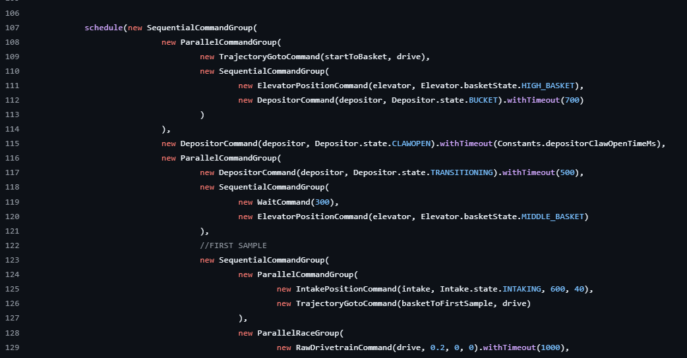

FTC 2024-2025: Road To Worlds
By Luke White
Introduction
Wow, I did not expect to be writing this. It's been several weeks since the state competition and it still blows my mind that we've made it to Worlds. Here is the series of events that led to us making the worlds competition in Houston TX.
League Tournament
From what I can remember, the whole process was pretty smooth once I got used to it. Each subsystem on the robot was split into its own file with a loop() function that was run continuously in the opmode. Seemed pretty straightforward. Only problem: for autonomous, we lacked the option to run two subsystems in parallel, as well as just general flexibiity for commands.
This Year
Enter FTCLib. FTCLib lets us create commands that we can run in synchronous or in sequence. This year, we used FTCLib, and it has been very useful, especially for autonomous. We can now create macros much easier than before, both in teleop and autonomous. In the future, I plan to write my own library similar to FTCLib in the future, but for now, it's been very useful.
As far as general structure, I still have each subsystem its own class like before. Some improvements I've made is adding a constants file (why didn't I have this last year!?), where all our tunable values are kept. There is now an entire folder dedicated to different commands that we can use at any time (so useful).
One really useful tool that we used this year is MeepMeep, which allows us to visualize our Roadrunner paths out beforehand. This has helped with making sure our robot doesn't slam into the wall because we put the wrong degrees in the trajectory. So far Roadrunner (our path following library) has worked out fine, but it is pretty slow and limited. Hopefully (fingers crossed) I can write my own path following library similar to Pedro Pathing, but we'll see.
That's about all I can remember that's changed from last year as far as structure. Thanks for reading and check back for more! Also, quick unrelated note: this year we've started our Youtube channel! Feel free to check it out.